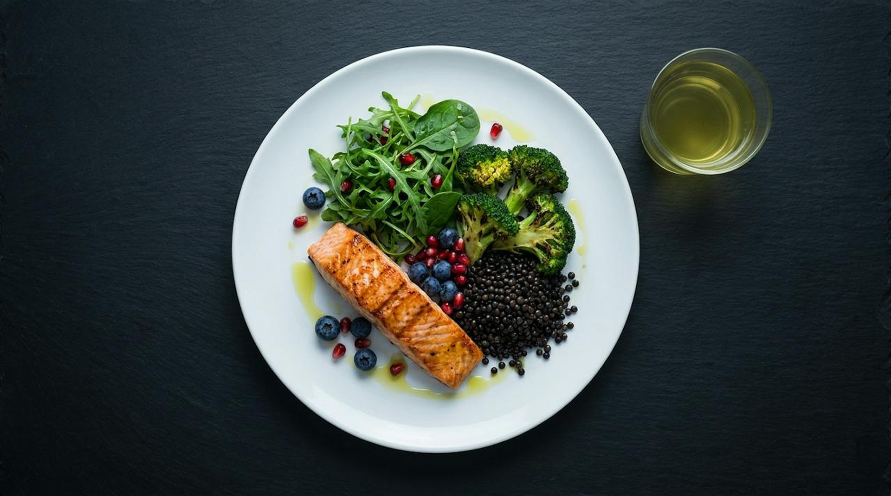

Layer two: food
Take the religion out of your diet.
Vegan, keto, Mediterranean, carnivore: the name is not the point.
1
Fiber variety
A diverse microbiome: healthy aging
2
Protein adequacy
Muscle: your longevity savings account
3
Polyphenol density
Berries, greens, olive oil, green tea
4
Minimal processed food
Real food sends clear signals

11 / 21
Wilmanski, Nature Metabolism 2021